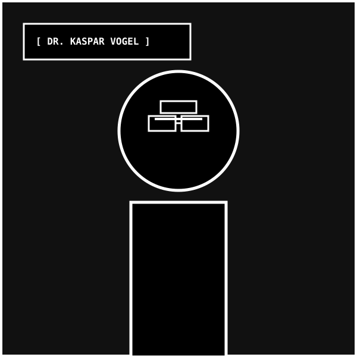
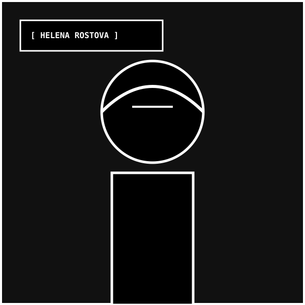
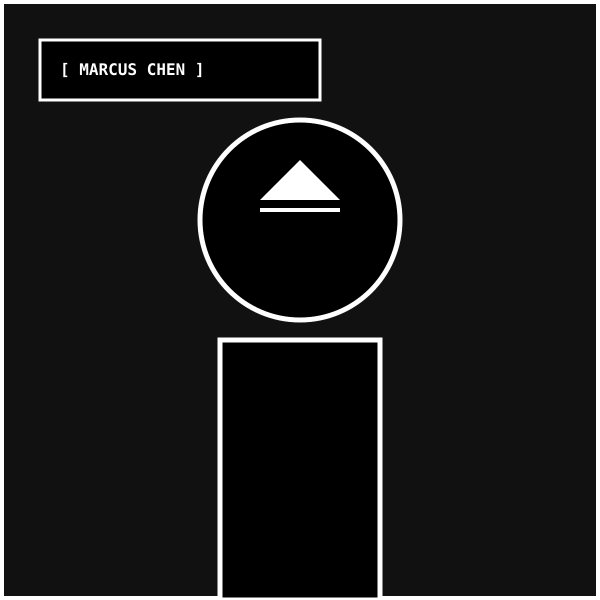

ETHICS OF
RAW MASS
We reject the superficial glass skin of late capitalism. We construct concrete and steel fortresses that prioritize gravity, thermal retention, and structural honesty above all fleeting stylistic trends.
CONCRETE MUST LOOK LIKE CONCRETE. NEVER PAINT OVER STRUCTURAL FORM.
When concrete is cast against raw wooden boards or precision steel formwork, it records the exact thermodynamic history of its curing process. To coat structural concrete in decorative stucco or synthetic paint is an act of architectural deception. Every air bubble, seam, and board texture must remain permanently visible.
BUILD FOR CENTURIES, NOT FOR THIRTY-YEAR COMMERCIAL DEPRECIATION CYCLES.
Modern real estate development designs structures with a planned obsolescence of 30 to 50 years. We build monoliths designed to outlast the civic infrastructure surrounding them. By utilizing ultra-high-performance fiber concrete (`180 MPa`) and unpainted self-sealing Corten steel, our buildings grow stronger and denser as they age.
FUNCTION DICTATES MASS. FORM FOLLOWS GRAVITY AND SEISMIC SHEAR.
The geometry of a STRUCT building is directly dictated by finite-element structural calculations. Cantilevers exist only where counter-balanced by massive anchor cores. Angled louvers exist only where solar angles demand thermal deflection. Ornamentation without structural justification is strictly forbidden.
COMPLETE ACOUSTIC, THERMAL, AND KINETIC ISOLATION FROM EXTERNAL CHAOS.
In an era of environmental volatility and acoustic saturation, architecture must serve as a sanctuary. Our dual-skin concrete walls (`800mm thick`), elastomeric base isolators (`±650mm displacement`), and subterranean bedrock caissons ensure that life inside a STRUCT monolith remains serene regardless of external turmoil.
THE MONOLITH TIMELINE
THE ETH ZURICH BRUTALIST LAB
Dr. Kaspar Vogel and Helena Rostova establish STRUCT as an independent architectural research laboratory dedicated to extreme load-bearing concrete formulations and unreinforced shear wall testing.
FIRST SUBTERRANEAN MONOLITH
Commissioned by European scientific institutes to build a permafrost botanical preservation vault at 3,200m altitude. Cured over 72 hours in freezing alpine winds using pressurized steam formwork jackets.
180 MPa FIBER CONCRETE BREAKTHROUGH
STRUCT patents its proprietary Ultra-High Performance Fiber Reinforced Concrete matrix, incorporating amorphous silica fume and micro-steel fibers to double tensile capacity and eliminate micro-cracks.
40-STORY BASE-ISOLATED SHEAR CORE
Completion of the Kyoto/Tokyo commercial tower series utilizing lead-rubber elastomeric base isolators (`±650mm displacement`). Successfully withstood 8.2 magnitude simulation shocks with zero structural strain.
REFRACTORY AEROSPACE BLUEPRINTING
STRUCT expands into sovereign aerospace infrastructure, casting heat-resistant refractory concrete launch pads and rocket blast deflectors engineered to withstand 1,500°C thermal plumes and acoustic shockwaves.
PRINCIPAL ARCHITECTS

DR. KASPAR VOGEL
Ph.D. in Structural Engineering, ETH Zurich. 28 years designing heavy concrete infrastructure across Switzerland, Japan, and the Americas. Pioneer of finite-element monolithic shear modeling.

HELENA ROSTOVA
M.S. Materials Science, Moscow / Zurich. Inventor of the ST-884 UHPFRC fiber concrete formula. Oversees all on-site batch testing, thermal hydration control, and continuous pour logistics globally.

MARCUS CHEN
M.Eng. Earthquake Engineering, Tokyo University. Specialist in elastomeric base isolation bearings, viscous shear dampeners, and aerodynamic wind vortex shedding for high-density skyscrapers.